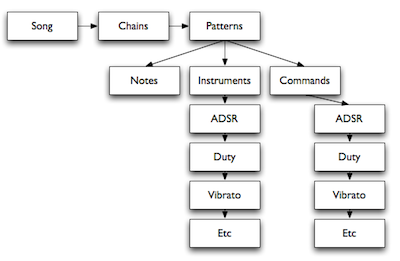

Object Hierarchy
The diagram just covers the relationship between primary objects in Pulsar but each object type is explained below.
Object Types
To clarify, an Object refers to a collection of related parameters or data in Pulsar.
Song
A Song is made up of 5 vertical columns, each column representing each of the sound-generating voices of the NES. From left-to-right the columns are labelled A, B, C, D and E. In Pulsar, the five columns are generally referred to as Tracks.
Each Track is made up of a number of Chains.
Chain
A Chain is a sequence of up-to sixteen Patterns. There are two columns in a Chain and sixteen rows. On each row you specify the Pattern number and the transpose value for the Pattern on that particular row of the Chain. The Chain length can be anywhere between one and sixteen rows.
Pattern
A Pattern is where you enter all the musical data to make up your Song. There are sixteen steps per Pattern and each Pattern has 3 dedicated columns: Note, Instrument and Command.
Instrument
An Instrument is a collection of synthesis parameters that tell Pulsar how to generate sound. Instruments are used by Tracks A, B, C and D though not all parameters are operational for every Track because of the characteristics of each of the hardware voices. Track E (DPCM) uses Drumkits instead of Instruments.
Drumkit
A Drumkit is used on Track E (DPCM) instead of Instruments and is essentially 12 DPCM samples mapped over an octave with several playback parameters for each individual sample.
Command
Commands are used in Patterns to control many aspects of music playback and sound generation in Pulsar.
Envelope
Envelopes are ADSR Envelopes used by Instruments to shape the amplitude of individual notes (for Tracks A, B and D).
Duty Table
Duty Tables are used by Instruments to shape the Duty characteristics of the two square-wave channels (Tracks A and B).
Vibrato
In Pulsar, Vibrato is actually a Vibrato Object that contains several parameters that control the characteristics of the Vibrato effect.
Table
Tables are a table of pitch offsets, volume scaling and two Command columns that are applied in real-time to each note during playback.
Echo
In Pulsar, Echo is actually an Echo Object that contains several parameters that control the characteristics of the Echo effect.
MultiFX
MultiFX are a variation on a Table but can be used to control the sound on Track A, B, C and D simultaneously.
Speed Table
Speed Tables are used to control the playback speed of your song.
Object Count & Size
Here's a list of the count of each type of object in Pulsar and, where appropriate, the size of those objects (generally in 'steps').
| Object | Count | Size |
|---|---|---|
| Songs | 00 - 07 | 00 - 7E steps |
| Chains | 00 - 7E | 00 - 0F steps |
| Patterns | 00 - 7E | 00 - 0F steps |
| Instruments | 00 - 1F | |
| Drumkits | 00 - 07 | 0C samples in each |
| Envelopes | 00 - 1F | |
| Duty Tables | 00 - 1F | 00 - 0F steps |
| Vibrato | 00 - 1F | |
| Tables | 00 - 37 | 00 - 0F steps |
| Echo | 00 - 1F | |
| MultiFX | 00 - 0F | 00 - 0F steps |
| Speed Tables | 00 - 1F | 00 - 0F steps |